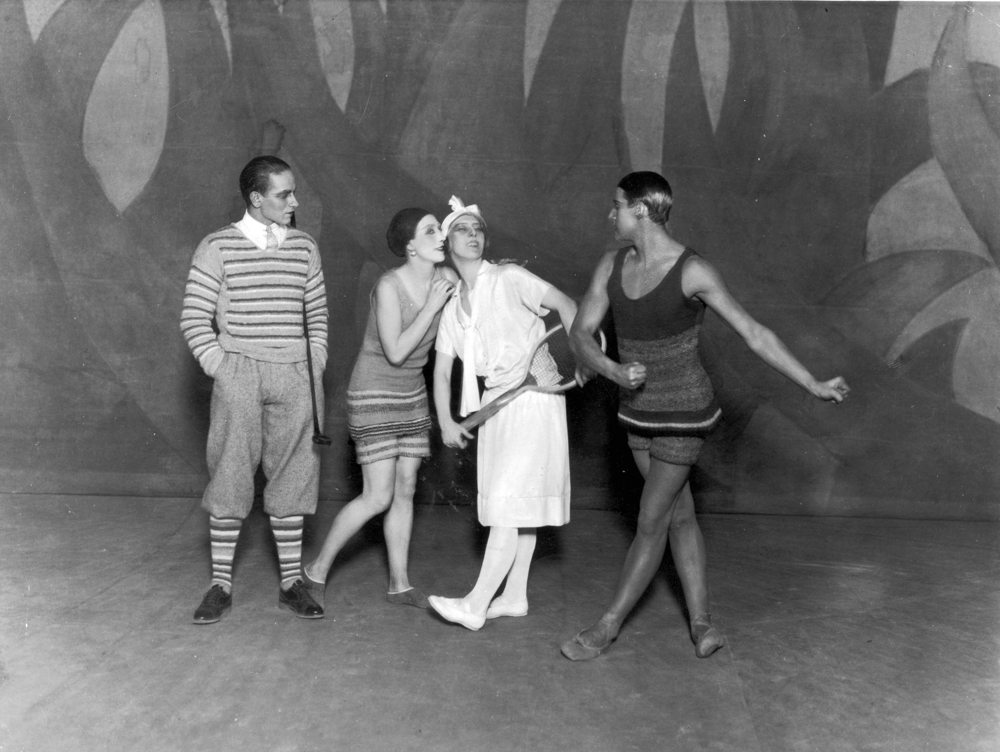
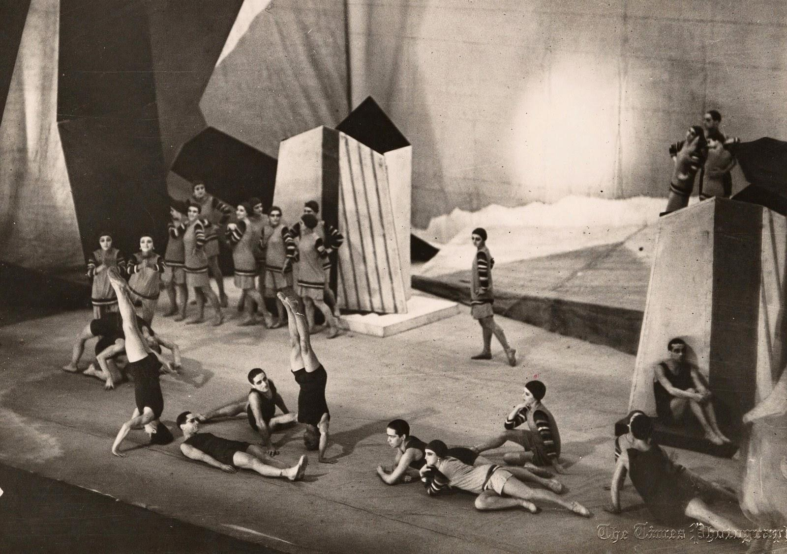
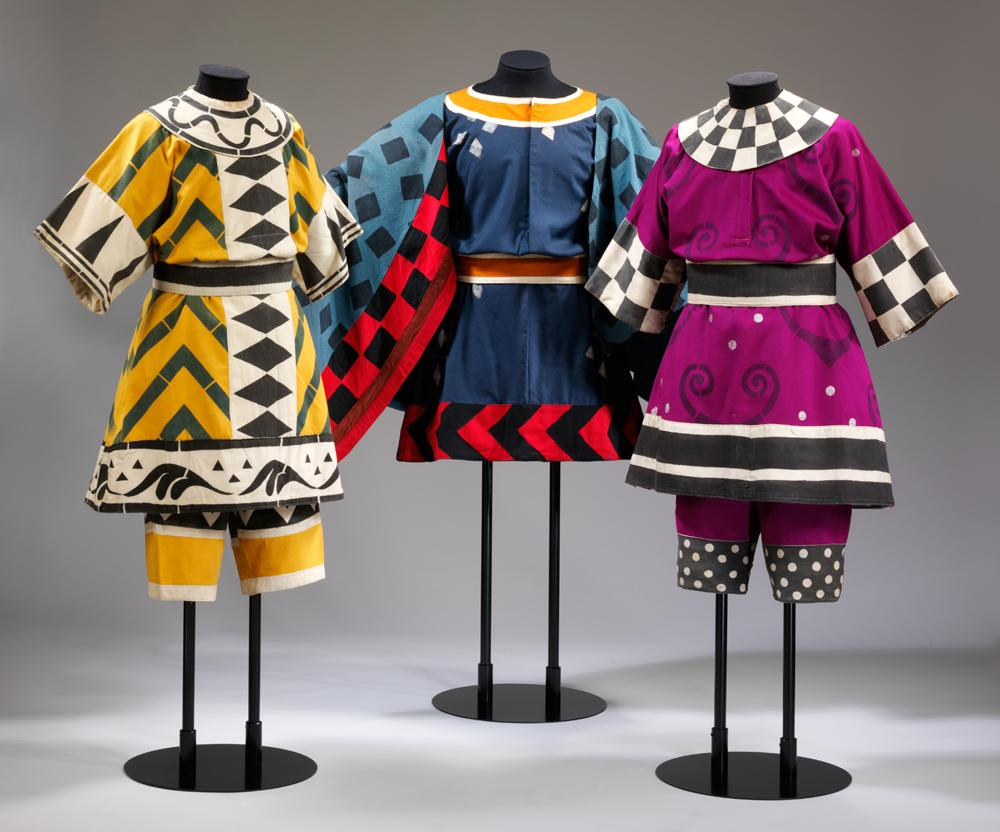
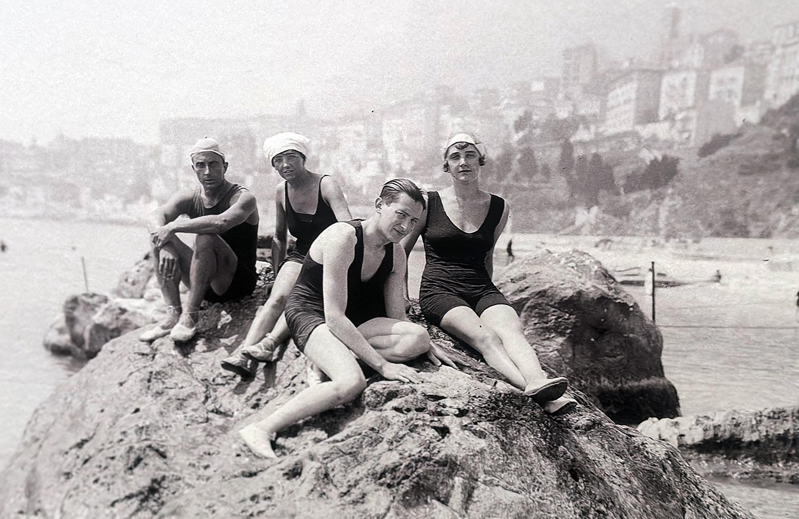

Paris, 1924 — Le Train Bleu, backstage
You’re holding the wrong garment.
Not wrong in design—never that—but wrong for this moment. The light will hit it differently than expected. You know it before anyone says it.
Across the room, Coco Chanel doesn’t look up. She doesn’t need to.
“Change it.”
No explanation. None required.
Backstage
The space is all motion, but controlled motion.
Dancers moving through narrow paths. Assistants carrying pieces that don’t look like costumes—because they aren’t, not really. They’re clothes. Modern ones.
That’s the point.
No tutus. No mythology. No illusion of another century.
This is now.
The garments
You adjust the piece—jersey fabric, light, designed to move with the body instead of against it.
Sportswear, but elevated:
Clean lines
No excess structure
Fabric that responds to movement rather than dictating it
It still feels wrong to call it “ballet costume.”
That word belongs to something older.
The difference
You’ve seen the others.
Ballets Russes has built entire worlds before:
Exotic courts
Folk rituals
Mythic landscapes
Here, there is no world.
Just people who look like they’ve stepped off a beach on the Riviera.
The pressure
Timing matters more than perfection.
A dancer steps forward. You adjust the line of the garment—not dramatically, just enough to ensure it reads clean from the house.
Everything is about reading correctly:
silhouette
movement
light
You’re not dressing bodies. You’re shaping perception.
The music begins
You don’t see the stage, but you hear the shift.
Darius Milhaud doesn’t give you grandeur. The music moves lightly, quickly—urban, contemporary.
Not overwhelming. Not reverent.
It matches the clothes.
Chanel’s presence
She steps closer to the wings now.
Still quiet. Still precise.
She’s not watching the dance as dance. She’s watching:
how the fabric moves
how the line holds
whether the audience understands what they’re seeing
This isn’t about ballet.
It’s about changing how people see bodies in motion.
The realization
You understand it in a flash—not as an idea, but as a correction:
This isn’t costume design entering ballet.It’s fashion taking control of the stage.
The dancers are not transforming into characters.
They are displaying a way of being.
The audience (heard, not seen)
Laughter in places it wouldn’t be before.
Applause that feels lighter, quicker.
No reverence. No distance.
They recognize themselves—aspirationally, at least.
The shift
Another quick adjustment. Another entrance.
Everything is faster than it should be.
Not chaotic—just accelerated.
Like the decade itself.
What you carry out of it
By the time the piece ends, nothing backstage has stopped moving.
But something has changed.
Not just here. Not just tonight.
The line to carry
As you hand off the final garment, you realize:
Tomorrow, this won’t look like costume.It will look like how everyone wants to live.
Great comparison—because those two works sit on opposite ends of what clothing is doing in performance.